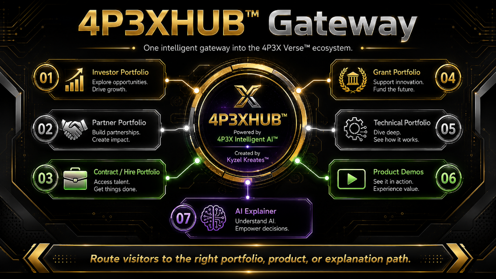
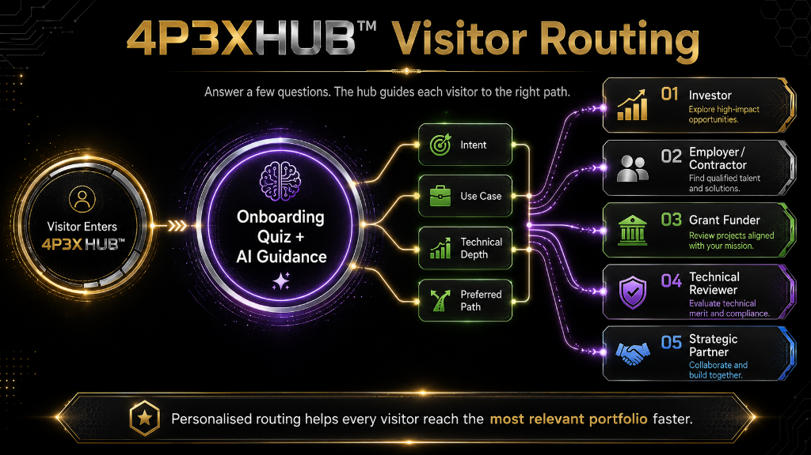
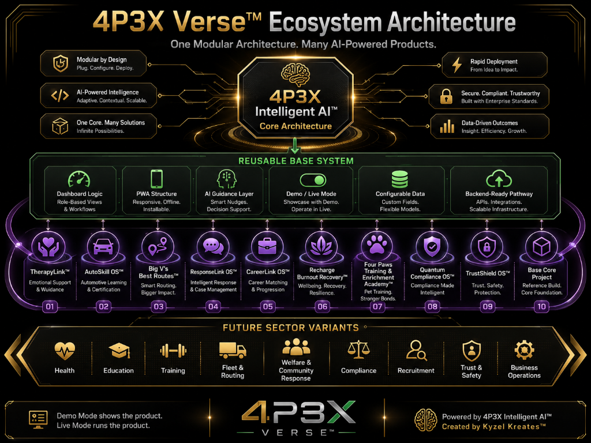
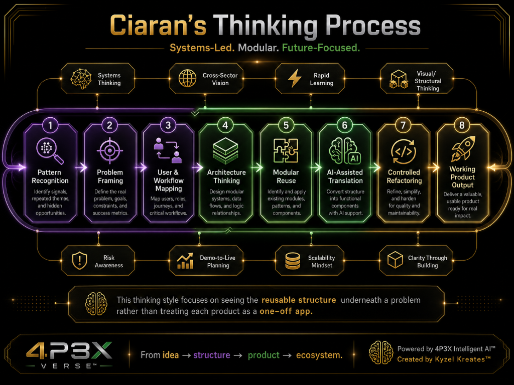
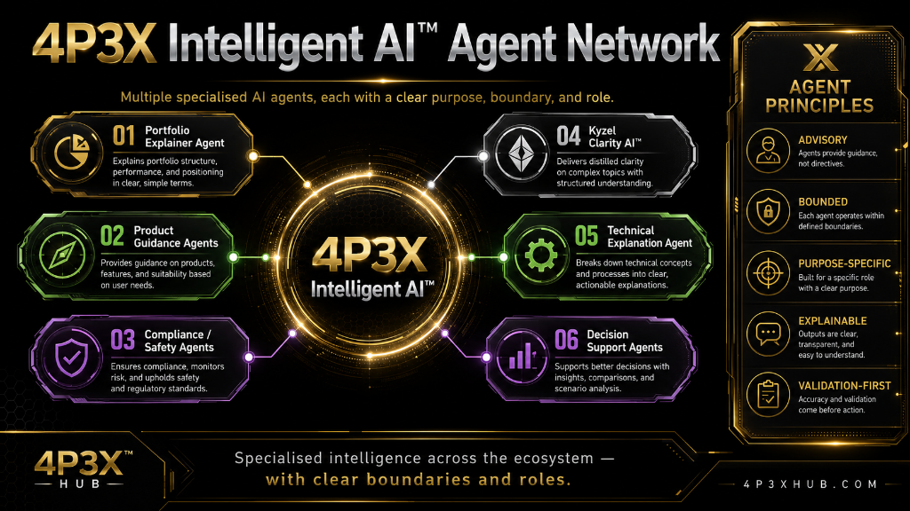
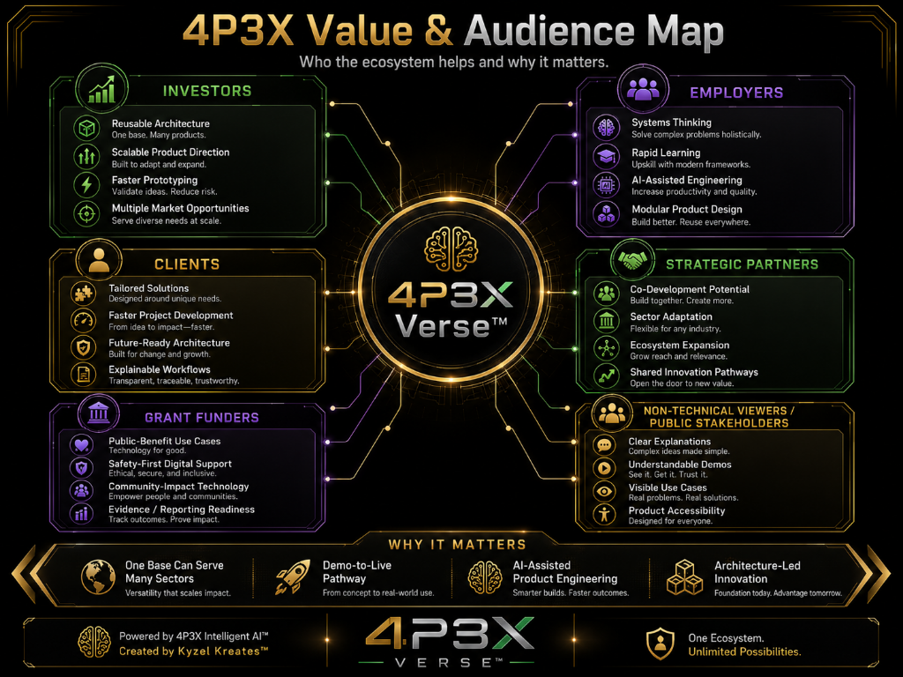
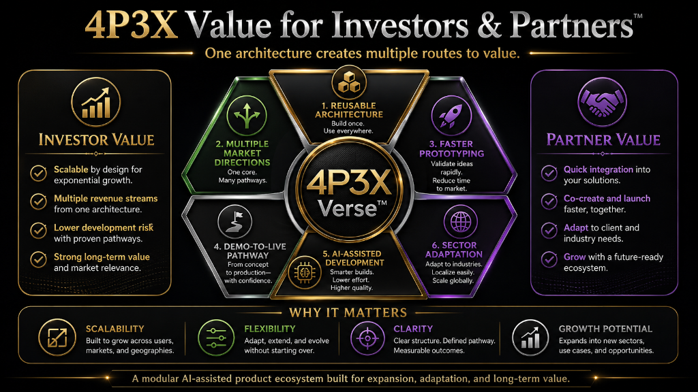
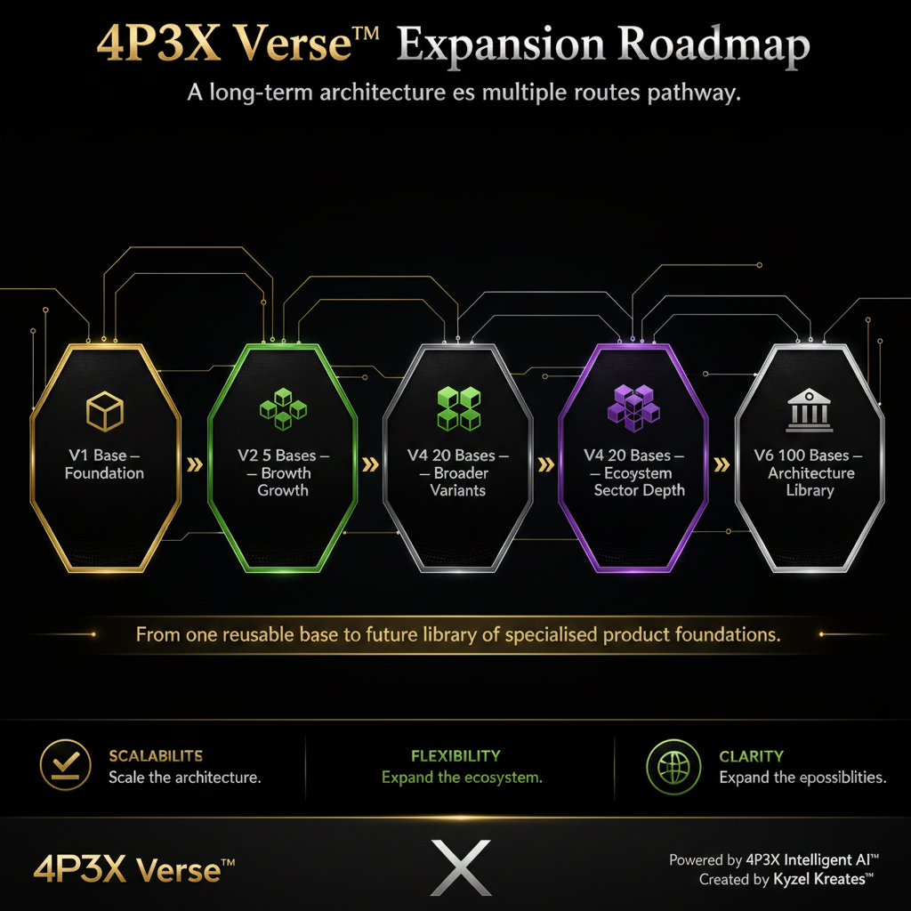
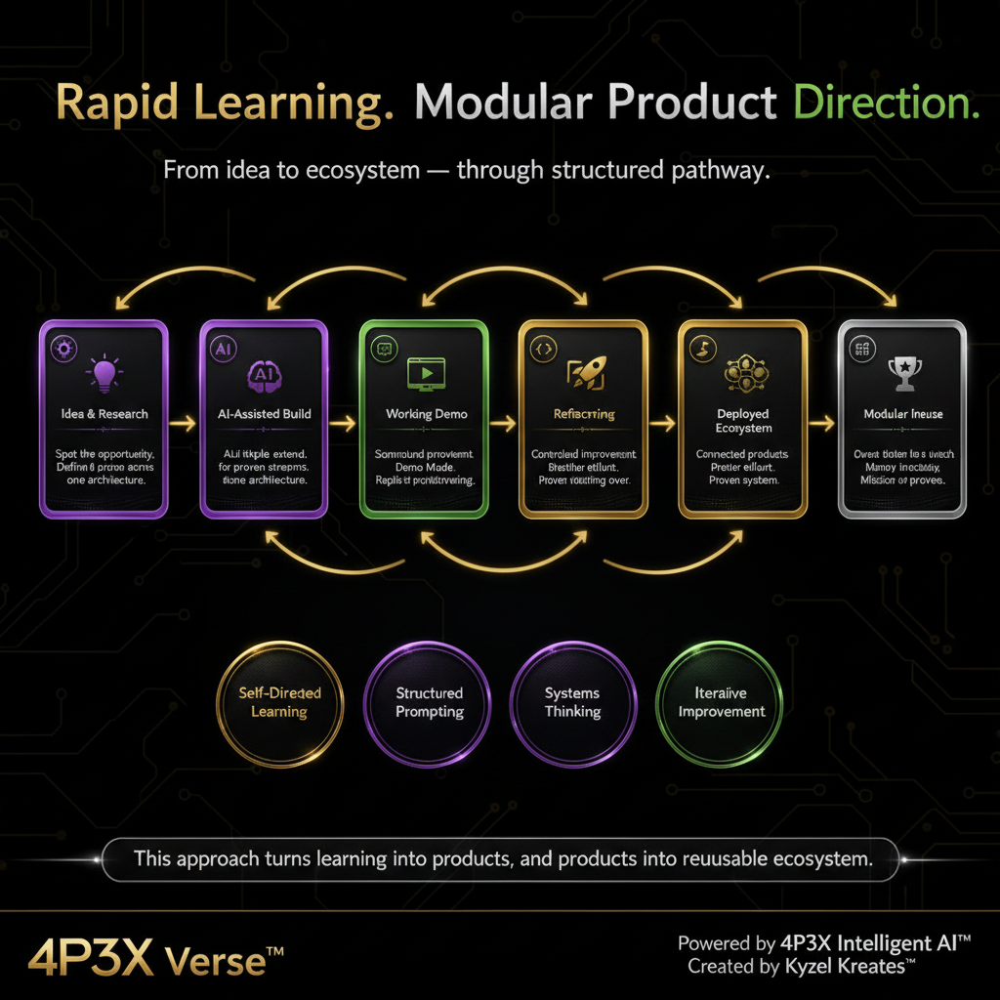

Reusable base structure
Shared dashboard/PWA shell, modular config, data model patterns, demo/live switching, AI guidance zones, and backend-ready planning — built once, used everywhere.
One Modular Architecture. Many AI-Powered Products.
A first-of-its-kind modular AI-assisted product ecosystem — 11 deployed products across healthcare, fleet, employment, wellbeing, education, compliance, and more.
4P3XHUB™ acts as the intelligent gateway into the 4P3X Verse™ ecosystem, helping each visitor reach the right portfolio, product showcase, technical proof, AI explainer, or business opportunity route.

4P3XHUB™ gateway diagram showing routes into investor, partner, contract, grant, technical, product demo, and AI explainer sections.
Find your path
The 4P3XHUB™ onboarding flow helps each visitor find the most relevant pathway by identifying their intent, use case, technical depth, and preferred route.
The 4P3XHUB™ onboarding flow helps each visitor find the most relevant pathway — identifying their intent, use case, technical depth, and preferred route to investor, employer, grant, technical, or partner sections.

Visitor routing flowchart showing how the 4P3XHUB onboarding quiz guides visitors to investor, employer, grant, technical, and partner pathways.
The 4P3X engineering concept
The strongest part of the 4P3X Verse™ is the reusable structure underneath every product. One architecture. Controlled refactoring. Many sector directions.
Shared dashboard/PWA shell, modular config, data model patterns, demo/live switching, AI guidance zones, and backend-ready planning — built once, used everywhere.
Each product is transformed through structured runs: sector identity, data, dashboards, PWA flows, AI oversight, backend readiness, and polish — no full rebuilds.
Demo Mode shows the product. Live Mode runs the product — once connected to authentication, persistent storage, real users, and real-time sync.
This diagram shows how the 4P3X Verse™ works as one reusable modular architecture — supporting many AI-powered products through dashboard logic, PWA structure, AI guidance layers, demo/live mode, configurable data, and backend-ready pathways.

4P3X Verse™ ecosystem architecture diagram showing the reusable base system, 10 deployed products, and future sector variants.
Systems thinking
My process is modular, systems-led, and future-focused. I look beyond a single app and ask: what reusable structure sits underneath? Who uses it, how does data move, what decisions need support, where do risks appear, and how can the same base scale into different sectors?
Why it matters
The 4P3X Verse™ demonstrates a practical route from idea to working product demo, then from demo to live product. One base. Many directions. Repeatable at scale — and already proven across 11 deployed products.
My thinking style focuses on seeing the reusable structure underneath a problem — from pattern recognition and problem framing through to architecture design, modular reuse, AI-assisted translation, controlled refactoring, and working product output.

Diagram showing Ciaran's systems-led modular thinking process: from pattern recognition through architecture thinking, modular reuse, AI-assisted translation, and controlled refactoring to working product output.
Deployed proof
Each card links to a live deployed demo. Click "View Case Study" for the full product write-up.
Why this matters to you
The 4P3X Verse™ demonstrates repeatable product creation from a single architecture base. Each product proves a different sector market. The same codebase can be licensed, white-labelled, or deployed at scale across multiple verticals with focused finishing work.
This portfolio proves systems thinking, AI-assisted development, rapid prototyping, modular architecture design, safety-aware product thinking, and the ability to deliver working demos across healthcare, logistics, compliance, education, and wellbeing sectors.
The 4P3X Verse™ shows a working prototype-to-product pathway across public-benefit sectors including community welfare, employment support, burnout recovery, and care coordination — all with clear demo-to-live deployment plans.
The architecture can be adapted to your sector in weeks, not months. Each product demonstrates how quickly the base can be refactored into a branded, sector-specific product with your data model, your users, and your backend.
Demo Mode shows the product. Live Mode runs the product. Each product can be demonstrated safely with labelled demo data, then moved toward live operation by connecting authentication, backend storage, persistent records, dashboards, reports, and real user workflows.

Demo Mode to Live Mode diagram showing demo data, transition layer, backend connection, API config guard, real users, persistent data, dashboards, reports, and operational use.
Portfolio-native AI explainer
Ask the portfolio guide about the architecture, demo/live mode, what skills are proven here, or why this matters to investors and employers.
For a fully live AI portfolio agent with real-time Q&A, try Kyzel Clarity AI™ ↗
The 4P3X Intelligent AI™ layer is designed as a network of specialised, bounded, advisory agents. Each agent has a clear purpose, role, and safety boundary — supporting portfolio explanation, product guidance, technical understanding, compliance awareness, and decision support.

4P3X Intelligent AI™ agent network diagram showing portfolio explainer, product guidance, compliance safety, Kyzel Clarity AI, technical explanation, and decision support agents.
Ready for full deployment
This portfolio hub can be expanded further with AI agent integration, backend data capture, PDF investor pack generation, CV/portfolio wording, contact capture, and product detail enhancements — all without breaking what's here.
One ecosystem. Multiple audiences.
This diagram maps the value of the 4P3X Verse™ for investors, employers, clients, strategic partners, grant funders, and non-technical stakeholders — showing why a reusable AI-assisted product ecosystem matters across multiple audiences and sectors.
This diagram maps the value of the 4P3X Verse™ for investors, employers, clients, strategic partners, grant funders, and non-technical stakeholders.

4P3X Value and Audience Map — who the ecosystem helps and why it matters across investors, employers, clients, strategic partners, grant funders, and public stakeholders.
The business opportunity
This diagram explains the business value of the 4P3X Verse™: reusable architecture, faster prototyping, multiple market directions, demo-to-live pathways, AI-assisted development, sector adaptation, and long-term ecosystem growth.
One architecture creates multiple routes to value — for investors, strategic partners, clients, and co-development opportunities.

4P3X value diagram showing investor and partner value through reusable architecture, faster prototyping, market directions, demo-to-live pathways, AI-assisted development, and sector adaptation.
Future architecture direction
This roadmap shows the long-term architecture expansion direction: from one reusable base, to 5, 10, 20, 50, and eventually 100 specialised product foundations. This is a planned future direction and architecture strategy — not a claim that all bases are already built.
A future architecture library concept: from one reusable base to a growing ecosystem of specialised product foundations.

4P3X Verse expansion roadmap showing V1 one base through V6 one hundred bases as a long-term architecture expansion pathway.
The build approach
This visual explains the creator journey behind the 4P3X Verse™: moving from ideas to AI-assisted builds, working demos, refactoring, deployed products, and a connected portfolio ecosystem — through self-directed learning, structured prompting, systems thinking, and iterative improvement.
This approach turns learning into products, and products into a reusable ecosystem — built through self-directed learning, structured AI prompting, and systems-led thinking.

Creator journey diagram showing rapid learning, AI-assisted build, working demo, refactoring, deployed product, and portfolio ecosystem growth.